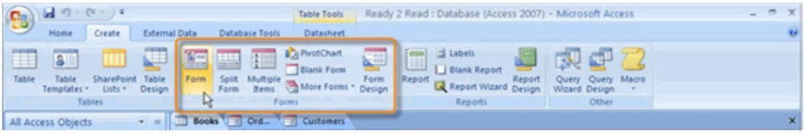
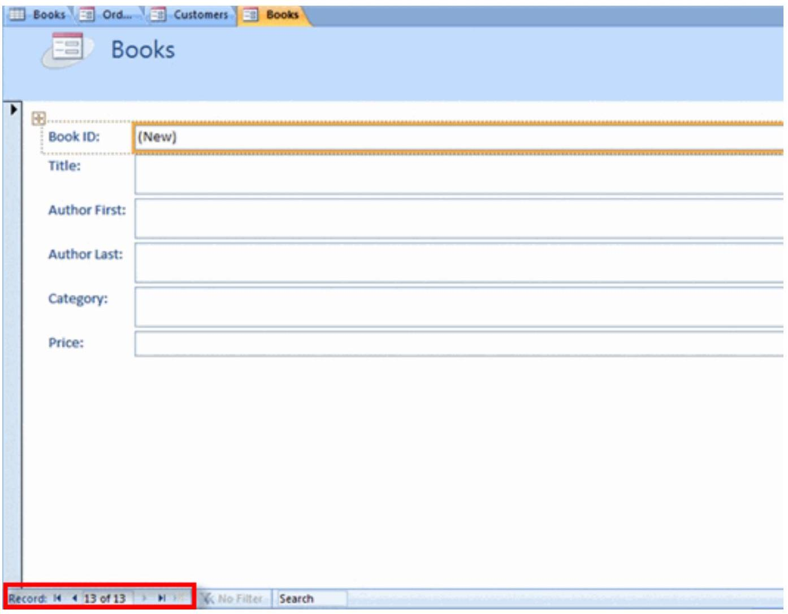
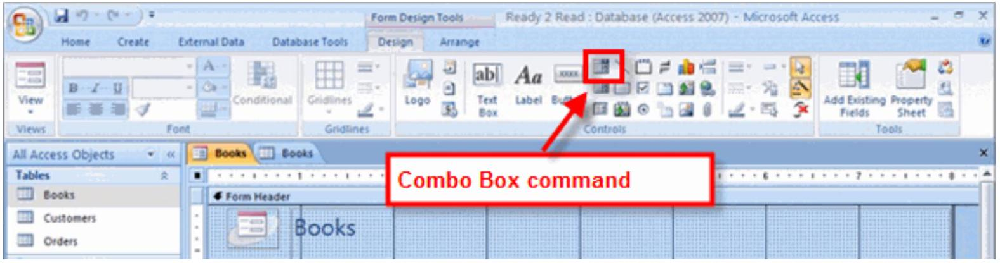
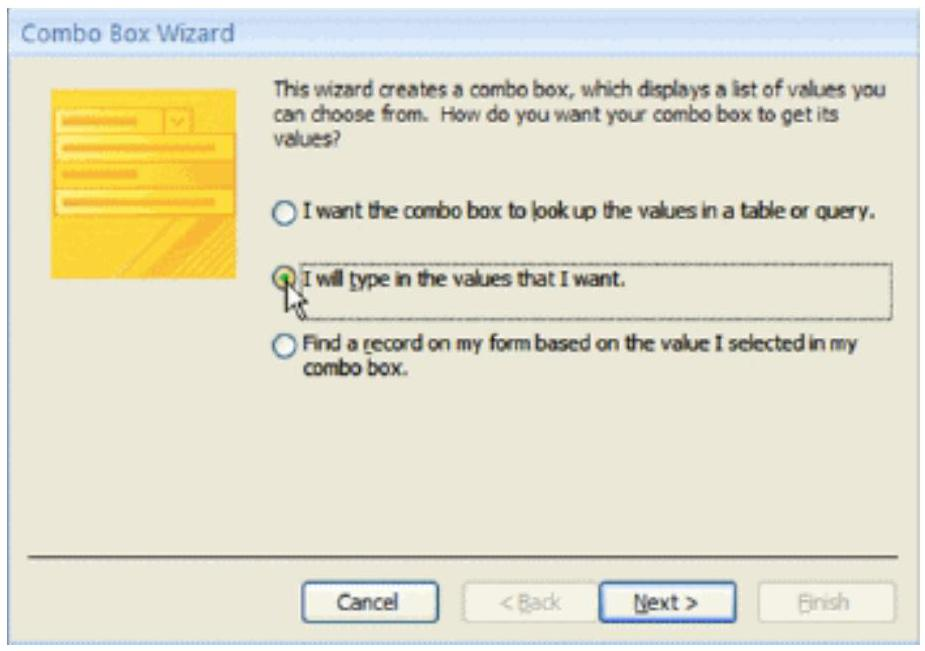
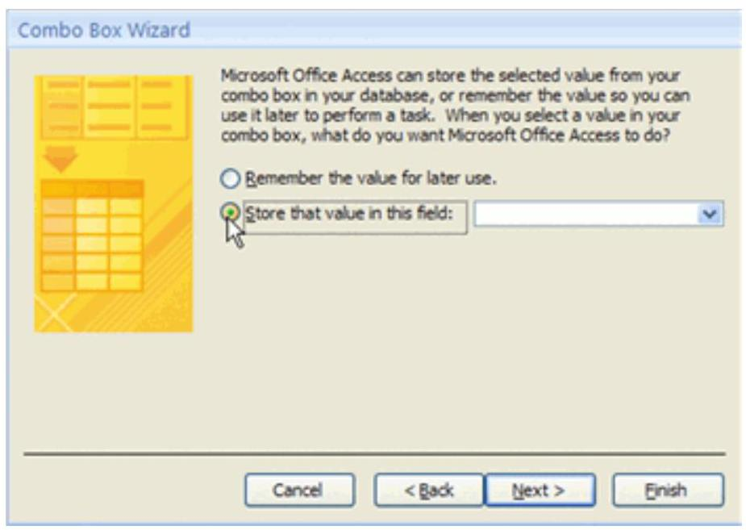
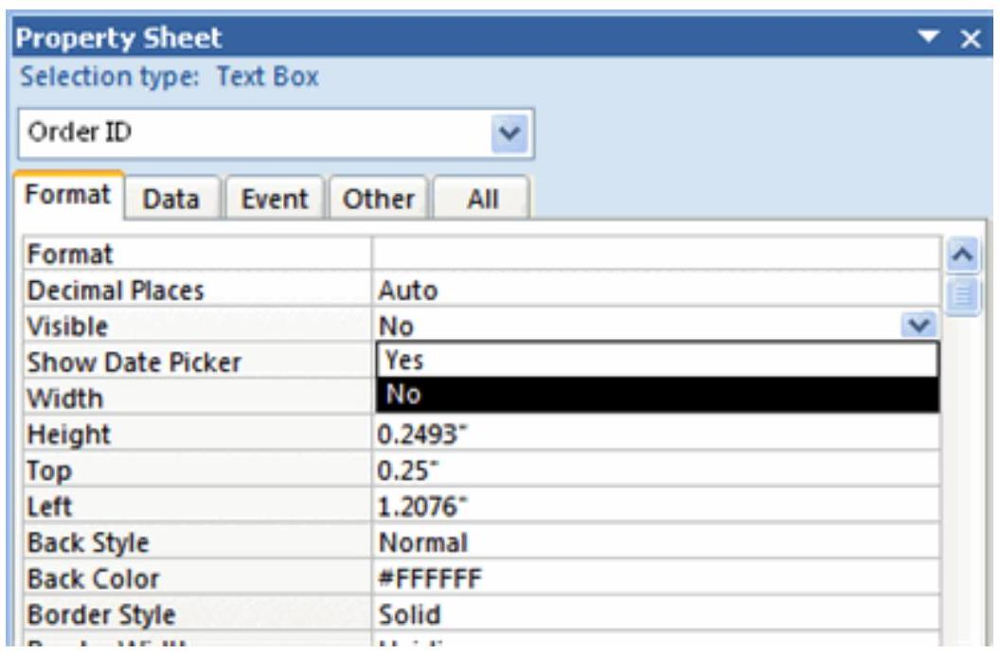
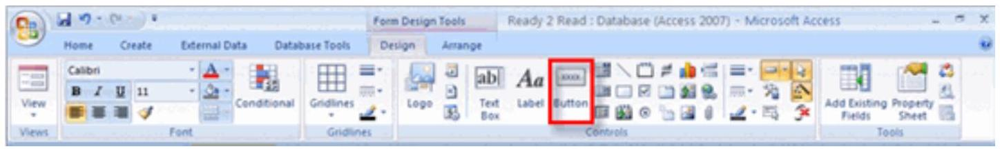
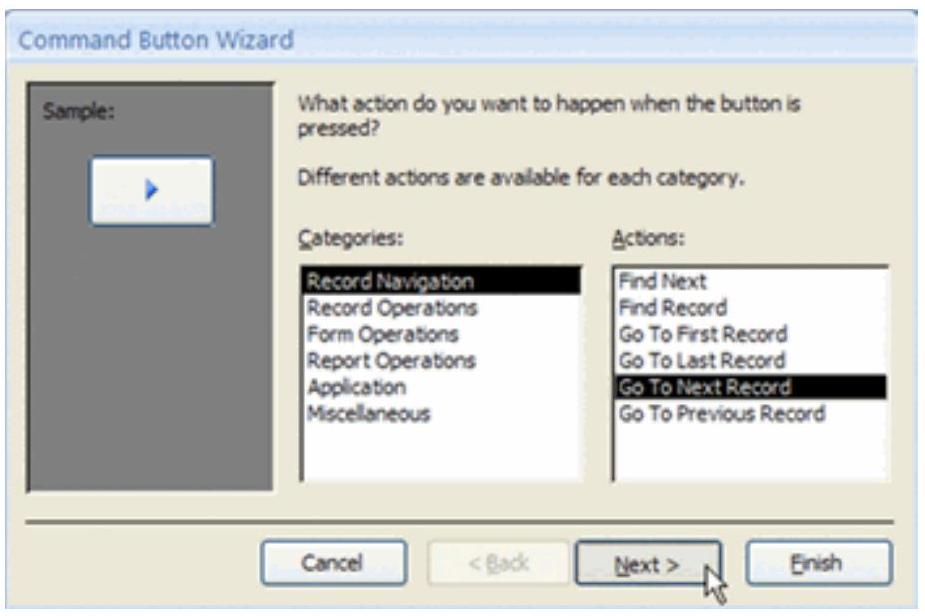
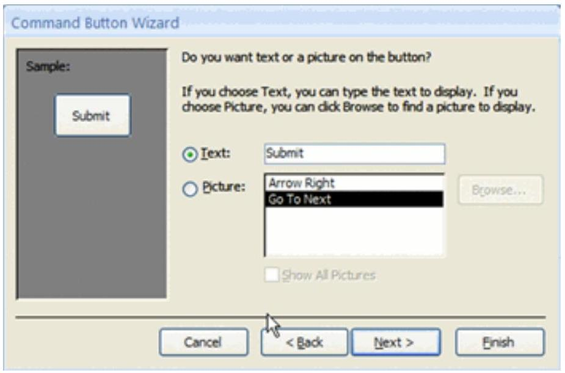
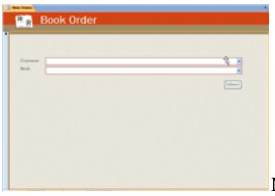

Making Data Entry Easy with Forms
Creating and Using Forms
Introduction
Another way to populate a database is with the use of forms. An Access 2007 form helps you know exactly what data to enter. In this lesson, we'll address the benefits of using forms with a database, and we'll show you how to set up a basic form for your Access 2007 database, as well as how to use the form to populate or edit data in the database. You'll also learn how to enhance a basic form with a drop-down list.
Why use forms?
In real life, a form is piece of paper you fill out so someone can collect and keep track of specific information about you. Only one record—your record—is captured with any given paper form.

Access 2007 forms work in a similar way. In previous lessons, you saw that you can populate a database by entering records into the tables themselves. If the database has hundreds of records and many fields to populate for any given record, a table can be overwhelming to a user entering data. An Access form lets you enter data one record at a time, without having to see the entire table.

An Access 2007 form also lets you know exactly what information to enter and can even tell you what that information should look like. Adding certain control components to a form—like a dropdown menu—can dramatically increase the integrity of the data that is held in a database.
Creating a form
Access 2007 has several automatic tools for creating forms. These tools are located in the Forms group on the Create tab in the Ribbon, as seen below:
Access 2007 forms tools include:
- The Form command makes a basic form, showing a single record at a time.
- The Split Form command creates a form showing one record on top and includes the Datasheet view of the entire source table on the bottom.
- The Multiple Items command creates a form that shows all records at once, which looks similar to the source table in Datasheet view.
- The Form Wizard is hidden under the More Forms command. It walks you through the process of creating more customized forms.
Using forms to enter data
Populating a database is easy once you have a basic form in place. Record navigation works the same way for forms as it does for tables. The navigation bar is located in the bottom-left of the object pane. The navigation buttons work the same way as they do for tables.
Creating a drop-down list using a Combo Box control:
- With the form opened in Design view, select the Combo Box command in the Controls group on the Design tab in the Ribbon. 
- Drag and drop the combo box sizing tool to create the combo box where you want it to be on the form.
- The Combo Box Wizard appears. Choose the desired option from the wizard, and click Next. 
- Because the middle option ("I will type in the values that I want.") was selected, the wizard asks for the values to be typed into a small table.
- Next, the wizard asks what to do with the entered values. Select "Store that value in this field:" and choose the appropriate field. 
- Finally, give the combo box a meaningful label, then click Finish. The new drop-down list will appear on the form.


Making Forms More Usable with Controls
Introduction

You've already seen how a combo box control can make a form more user friendly. In Access 2007, there are several additional ways you can modify forms to make them easier to use while also increasing the integrity of the database. In this lesson, we'll explain how to use form properties to limit the actions your form users can take. We'll also walk you through hiding fields on a form and adding command buttons to the form.
Setting form properties
Access 2007 allows you to set several form properties. Form properties are options that are set in Design view on the Property Sheet. These options control how the form looks, works, and interacts with the rest of the database.

Hiding fields on a form
There will be times when a field will not be needed on a form. Access 2007 allows you to hide fields by setting the Visible field property in Design view.
Setting field properties
Sometimes it may be necessary to set field properties from the form itself. For example, on the New Orders form, we want to set up the Order Date field to auto-fill with the current date each time an order is entered.

To set a field to auto-fill with the current date, set the Default Value property by clicking on the Expression Builder button (...) and entering Date().

Creating command buttons
Another way to make a form more user friendly is by adding command buttons to the form. Command buttons are a quick way for form users to take a specific action, like saving a record or opening another form.
- Click the Button command in the Controls group on the Ribbon. 
- When the Command Button Wizard opens, select the action you want the button to perform from the Categories and Actions lists. 
- Choose whether you want text or a picture on the button. 
- Give the button a meaningful name and click Finish.
Making Forms Attractive
Introduction
Now that you know how to make forms work better, it's time to think about what a form looks like. In this lesson, we'll address the various ways to modify a form layout, including how to add a logo and apply an AutoFormat to the form. We'll also cover using and formatting titles, as well as moving and applying borders to objects.
Adding a logo
You can customize the look of your forms by replacing the default icon with a logo using the Logo command in the Controls group on the Ribbon.

Applying a style with AutoFormat
A simple way to change the way your form looks is to apply a style with the AutoFormat command, which provides several pre-designed color schemes.

Working with titles and text
You can easily change the form title and other text on the form using the Title command and the font formatting options in the Ribbon.

Working with objects on a form
In Layout view, you can resize and reposition the objects on the form, and apply borders to them to modify the way the form looks.
- To move objects: Highlight the object and drag and drop it to a new location.
- To resize objects: Highlight the object and drag the edge to the preferred size.
- To apply a border: Highlight the object and use the Line Width, Style, and Color commands.